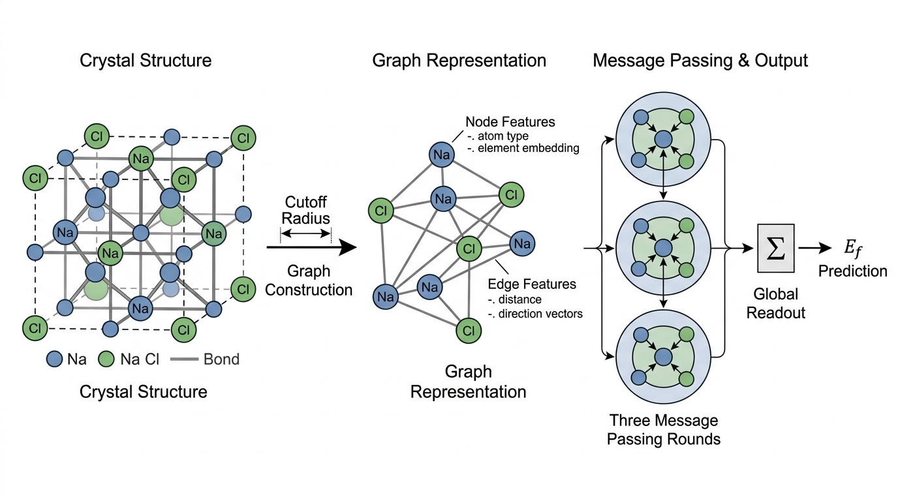

"I screened 2.2 million crystal structures before breakfast. The hard part was deciding which 380,000 to call 'stable.' The experimentalists are still catching up."
A Graph Neural Network With a Materials Project Account
Beyond proteins and small molecules, foundation models are transforming two more scientific domains. In materials science, graph neural networks (GNNs) pretrained on millions of crystal structures predict formation energies and interatomic forces at a fraction of the cost of quantum-mechanical calculations. In genomics, transformer models pretrained on raw DNA sequences learn the regulatory grammar that controls gene expression. This section covers five models: GNoME, MACE-MP-0, and CHGNet for materials; Nucleotide Transformer and DNABERT-2 for genomics. Each model demonstrates how the right architecture and pretraining objective can capture domain-specific physical laws.
1. GNoME: Scaling Materials Discovery
In 2023, a single model screened more candidate crystals in weeks than human crystallographers had validated in over a century, and 380,000 of those candidates turned out to be stable new materials.
That model is GNoME (Graph Networks for Materials Exploration; Merchant et al., 2023), a GNN developed by Google DeepMind that predicted 2.2 million crystal structures to be stable, of which 380,000 were subsequently confirmed, expanding known stable inorganic materials by roughly an order of magnitude. The model uses an active learning loop: GNoME proposes candidate crystal structures, density functional theory (DFT, a quantum-mechanical method that approximates the electronic structure of atoms to compute energies and forces from first principles) calculations evaluate their stability, and the results are fed back to improve the model. Figure 27.4 illustrates this closed-loop pipeline.
Formation energy is the energy released or absorbed when a compound forms from its constituent elements in their standard states. A negative value means the compound is more stable than its separated elements, making it a candidate for real-world synthesis. The GNN ingests the crystal graph and runs several rounds of message passing (an iterative process in which each node in the graph collects and aggregates information from its neighbors, progressively building representations that encode the wider structural context), building atom-level representations that encode local chemical environments. It then pools those representations into a single scalar prediction of formation energy per atom. Use formation energy screening to triage thousands of hypothetical compositions quickly. Switch to full DFT or experimental validation only for top candidates that pass the screening threshold.
Architecture and Usage
What. A GNN that takes a crystal structure (atoms and their 3D positions in a periodic unit cell) as input and predicts the formation energy per atom.
Why. DFT calculations are the gold standard for predicting material stability, but each calculation takes minutes to hours on a compute cluster. GNoME predicts formation energy in milliseconds, enabling screening of millions of candidate structures that would be computationally infeasible with DFT alone.
Common Misconception
A common misconception is that GNoME (or any ML potential) replaces DFT and experimental synthesis. It does not. These models are screening tools that narrow millions of candidates down to hundreds worth validating; the final ground truth still comes from quantum-mechanical calculations or laboratory synthesis, because the ML model inherits systematic biases from its training data and can confidently mispredict structures outside its training distribution.
How. The model represents each crystal as a graph where nodes are atoms and edges connect atoms within a cutoff distance. Node features encode element identity; edge features encode distance and direction. Multiple rounds of message passing aggregate information from neighboring atoms, and a final readout layer predicts the total formation energy. Figure 27.3.1 illustrates crystal-to-graph conversion and GNN message passing for formation energy prediction.

When. Use GNoME when you need rapid stability screening of hypothetical crystal structures. It is particularly valuable for compositional exploration: testing whether a new combination of elements could form a stable material before committing to expensive DFT calculations or synthesis experiments.
The formation energy \(E_f\) determines thermodynamic stability:
$$E_f = E_{\text{total}} - \sum_i n_i \mu_i$$where \(E_{\text{total}}\) is the total energy of the compound, \(n_i\) is the number of atoms of element \(i\), and \(\mu_i\) is the chemical potential of element \(i\) in its reference state. A material is thermodynamically stable if it lies on the convex hull (the lower boundary of the lowest-energy phases plotted against composition) of formation energies for its composition space.
from pymatgen.core import Structure, Lattice
import numpy as np
# Build a crystal structure programmatically: NaCl (rock salt)
lattice = Lattice.cubic(5.64) # cubic lattice, a = 5.64 Angstroms
nacl = Structure(
lattice,
species=["Na", "Cl", "Na", "Cl", "Na", "Cl", "Na", "Cl"],
coords=[
[0.0, 0.0, 0.0], [0.5, 0.5, 0.5], # Na at origin, Cl at body center
[0.5, 0.5, 0.0], [0.0, 0.0, 0.5], # alternating pattern
[0.5, 0.0, 0.5], [0.0, 0.5, 0.0],
[0.0, 0.5, 0.5], [0.5, 0.0, 0.0],
]
)
print(f"Formula: {nacl.composition.reduced_formula}")
print(f"Space group: {nacl.get_space_group_info()[0]}")
print(f"Number of atoms: {nacl.num_sites}")
print(f"Lattice parameter: {nacl.lattice.a:.2f} Angstroms")
print(f"Volume: {nacl.volume:.2f} Angstrom^3")
# Graph representation for GNN input
from pymatgen.analysis.graphs import StructureGraph
from pymatgen.analysis.local_env import CrystalNN
crystal_nn = CrystalNN()
struct_graph = StructureGraph.from_local_env_strategy(nacl, crystal_nn)
print(f"\nCrystal graph:")
print(f" Nodes (atoms): {len(struct_graph.graph.nodes)}")
print(f" Edges (bonds): {len(struct_graph.graph.edges)}")
print(f" Avg coordination: "
f"{np.mean([struct_graph.graph.degree(n) for n in struct_graph.graph.nodes]):.1f}")GNoME's most important contribution is not the model architecture but the active learning loop. The model proposes candidates in the regions of composition space where it is most uncertain, DFT evaluates those candidates, and the results improve the model's predictions in precisely those uncertain regions. This closed-loop approach discovered more stable materials in 18 months than the entire materials science community had cataloged in the previous century. The principle generalizes: any foundation model paired with an experimental validation oracle can run an active learning loop. We will formalize this approach in Chapter 46 (Automated Experiment Design).
2. MACE-MP-0: A Universal Interatomic Potential
MACE-MP-0 (Batatia et al., 2024) is a universal interatomic potential. It predicts the energy and forces of any atomic configuration across the entire periodic table. Unlike GNoME, which predicts formation energies of complete crystal structures, MACE-MP-0 predicts the potential energy surface (the function that maps every possible arrangement of atoms to its total energy, so that the slope at any point gives the force on each atom). Given any arrangement of atoms, it computes the energy and the force on each atom. This enables molecular dynamics simulations, geometry optimization, and phonon calculations (where phonons are quantized lattice vibrations that govern thermal and mechanical properties of solids) at near-DFT accuracy with orders-of-magnitude speedup. (As of 2024, the team released an updated checkpoint called MACE-MP-0b with improved accuracy across the periodic table, particularly for transition metals and rare earths; the architecture and API remain the same.)
A force prediction that points the wrong direction can send a molecular dynamics simulation careening into a physically impossible state within nanoseconds. Getting the geometry of forces right is not merely a nice property; it is the difference between a simulation that matches experiment and one that explodes.
MACE uses an equivariant message-passing architecture. "Equivariant" means that if you rotate the atomic configuration, the predicted forces rotate accordingly. This is a hard physics constraint: forces are vectors, and their direction must transform correctly under rotation. Standard GNNs do not enforce this constraint and must learn it from data, which requires more parameters and more training examples.
Mental Model
Think of equivariance like a weather vane on a barn roof. When you rotate the barn (the input), the weather vane (the output force vector) rotates by exactly the same amount, automatically, because of how it is physically attached. An equivariant network builds that attachment into its architecture: the mathematical operations that compute forces are wired so that rotating the input atoms guarantees the output forces rotate identically. A non-equivariant network is like taping a paper arrow to the roof; it might point the right way for the orientations you trained on, but spin the barn to a new angle and the arrow stays fixed, giving a wrong reading until you retrain.
The MACE architecture builds higher-order equivariant features through tensor products of atomic embeddings with spherical harmonics (mathematical functions defined on the surface of a sphere that encode directional information about interatomic vectors):
$$h_i^{(t+1)} = h_i^{(t)} + \sum_{j \in \mathcal{N}(i)} W^{(t)} \cdot \left( R_{ij}^{(t)} \otimes h_j^{(t)} \right)$$where \(h_i^{(t)}\) is the feature vector of atom \(i\) at layer \(t\), \(R_{ij}^{(t)}\) encodes the relative position of atoms \(i\) and \(j\) as spherical harmonics, and \(\otimes\) denotes the tensor product that couples geometric and chemical information. The learnable weights \(W^{(t)}\) determine how this coupled information is mixed.
# MACE-MP-0 usage through the mace-torch package
# pip install mace-torch
from mace.calculators import mace_mp
from ase import Atoms
from ase.build import bulk
import numpy as np
# Create a silicon crystal
si = bulk("Si", "diamond", a=5.43)
print(f"Silicon unit cell: {si.get_chemical_formula()}")
print(f"Positions:\n{si.get_positions()}")
# Load the pretrained MACE-MP-0 calculator
calc = mace_mp(model="medium", default_dtype="float64")
si.calc = calc
# Compute energy and forces
energy = si.get_potential_energy()
forces = si.get_forces()
stress = si.get_stress()
print(f"\nEnergy: {energy:.4f} eV")
print(f"Energy per atom: {energy / len(si):.4f} eV/atom")
print(f"Max force: {np.abs(forces).max():.6f} eV/Angstrom")
print(f"Stress tensor (Voigt): {stress.round(4)}")
# Compare: perturb one atom and recompute
si_perturbed = si.copy()
si_perturbed.calc = calc
si_perturbed.positions[0] += [0.1, 0.0, 0.0] # displace by 0.1 Angstrom
energy_pert = si_perturbed.get_potential_energy()
forces_pert = si_perturbed.get_forces()
print(f"\nAfter 0.1 A displacement:")
print(f"Energy change: {energy_pert - energy:.4f} eV")
print(f"Restoring force on atom 0: {forces_pert[0]} eV/Angstrom")3. CHGNet: Charge-Informed Potentials
CHGNet (Deng et al., 2023) extends the universal potential concept by explicitly tracking atomic charges and magnetic moments. Standard interatomic potentials (including MACE-MP-0) predict energy as a function of atomic positions only, ignoring the electronic degrees of freedom. CHGNet adds charge and spin as additional variables, enabling accurate simulation of electrochemical reactions, magnetic phase transitions, and redox processes (reactions involving electron transfer between atoms, which change their oxidation states).
CHGNet was pretrained on 1.6 million structures from the Materials Project, with energies, forces, stresses, and magnetic moments computed by DFT. On its benchmark test sets, the model achieves energy prediction errors below 30 meV/atom and force errors below 60 meV/Angstrom across the periodic table (circa 2023). (As of 2024, CHGNet v0.3 further reduced these errors and added broader coverage of magnetic and electrochemical systems.)
from chgnet.model.model import CHGNet
from pymatgen.core import Structure, Lattice
# Load pretrained CHGNet
chgnet = CHGNet.load()
# Predict properties for LiFePO4: a battery cathode material
# where charge tracking matters
lifepo4 = Structure.from_spacegroup(
"Pnma", # olivine space group
Lattice.from_parameters(10.33, 6.01, 4.69, 90, 90, 90),
species=["Li", "Fe", "P", "O", "O", "O", "O"],
coords=[
[0.0, 0.0, 0.0],
[0.282, 0.25, 0.975],
[0.095, 0.25, 0.418],
[0.097, 0.25, 0.743],
[0.457, 0.25, 0.206],
[0.166, 0.046, 0.285],
[0.166, 0.454, 0.285],
]
)
prediction = chgnet.predict_structure(lifepo4)
print(f"Material: LiFePO4 (olivine)")
print(f"Energy: {prediction['e']:.4f} eV/atom")
print(f"Max force: {abs(prediction['f']).max():.4f} eV/Angstrom")
print(f"Magnetic moments: {prediction['m'].round(2)}")Consider a hypothetical scenario: a battery research group wants to find new cathode materials with higher energy density than LiFePO4. They generate 50,000 hypothetical compositions by substituting Fe with other transition metals (Mn, Co, Ni, V) and varying the lithium content. Using CHGNet, they compute the formation energy and voltage for each candidate in minutes, a task that would take years of DFT wall time. CHGNet's charge tracking is essential here: the voltage depends on the oxidation state change during lithium intercalation, which requires knowing the charge distribution. In a workflow like this, the top candidates (those predicted to be stable with voltage above 4.0 V) would be passed to DFT for validation before any experimental synthesis. This is the same active-learning acceleration pattern used by GNoME, applied to a focused engineering problem. See Chapter 49 for a complete materials discovery workflow.
Where GNoME, MACE-MP-0, and CHGNet learn the physics of atomic arrangements in crystals, a parallel revolution applies the same self-supervised recipe to a very different substrate: the four-letter sequences that encode biological information in DNA.
4. Nucleotide Transformer: Genomic Language at Scale
The Nucleotide Transformer (Dalla-Torre et al., 2023) brings the protein language modeling paradigm to DNA. The model is a transformer encoder pretrained on nucleotide sequences from 3,200 diverse genomes using masked nucleotide prediction. The model family spans four sizes (50M to 2.5B parameters) and comes in two variants: one pretrained on human genome reference sequences, and one pretrained on multi-species sequences.
DNA has a four-letter alphabet (A, C, G, T), much smaller than the 20-letter amino acid alphabet. To compensate, the Nucleotide Transformer uses a tokenization scheme based on 6-mers (contiguous sequences of 6 nucleotides), producing a vocabulary of \(4^6 = 4{,}096\) tokens. This captures local sequence context within each token, similar to how byte-pair encoding captures subword structure in NLP.
from transformers import AutoTokenizer, AutoModel
import torch
# Load Nucleotide Transformer (500M variant)
model_name = "InstaDeepAI/nucleotide-transformer-v2-500m-multi-species"
tokenizer = AutoTokenizer.from_pretrained(model_name, trust_remote_code=True)
model = AutoModel.from_pretrained(model_name, trust_remote_code=True)
model.eval()
# A DNA sequence containing a known promoter region
# (simplified TATA box + downstream sequence)
dna_sequence = (
"GCGCGCATAAAAGGCGCGCGCATGCTAGCTAGCTAGCTAGCGATCGATCG"
"ATCGATCGATCGATCGTAGCTAGCTAGCAATTGCAATTGCTAGCTAGCTAG"
)
inputs = tokenizer(dna_sequence, return_tensors="pt")
with torch.no_grad():
outputs = model(**inputs)
embeddings = outputs.last_hidden_state
print(f"Input sequence length: {len(dna_sequence)} nucleotides")
print(f"Token count: {inputs['input_ids'].shape[1]}")
print(f"Embedding shape: {embeddings.shape}")
print(f"Embedding dimension: {embeddings.shape[2]}")
# Mean-pool for a sequence-level embedding
seq_embedding = embeddings[0, 1:-1].mean(dim=0) # exclude special tokens
print(f"Sequence embedding: {seq_embedding.shape}")
print(f"Embedding norm: {seq_embedding.norm():.4f}")In practice, these per-token and sequence-level embeddings serve as input features for downstream classifiers. By adding a lightweight prediction head (typically a linear layer or a small MLP) on top of the frozen or fine-tuned embeddings, researchers have achieved state-of-the-art results on tasks such as promoter detection, splice site prediction, enhancer identification, and variant effect scoring, all without task-specific architectures.
5. DNABERT-2: Efficient Genomic Understanding
DNABERT-2 (Zhou et al., 2024) addresses a limitation of k-mer tokenization. Fixed k-mers create an arbitrary segmentation boundary: the sequence ACGTAG tokenized as 6-mers starting at position 0 produces different tokens than the same sequence starting at position 1. DNABERT-2 replaces k-mers with byte pair encoding (BPE), the same tokenization strategy used by GPT models. BPE learns a data-driven vocabulary that captures variable-length motifs, from single nucleotides to longer functional elements.
DNABERT-2 achieves strong performance on 28 genomic prediction benchmarks with only 117M parameters, roughly 20x smaller than the largest Nucleotide Transformer. This efficiency comes from three design choices: BPE tokenization (better coverage per token), ALiBi positional encoding (Attention with Linear Biases, which adds a learned distance penalty to attention scores instead of fixed position embeddings, letting the model handle variable sequence lengths without retraining), and flash attention (a memory-efficient attention algorithm that tiles the computation to minimize GPU memory reads, reducing both memory footprint and wall-clock time).
Checkpoint
So far: DNABERT-2 combines three efficiency techniques (BPE tokenization for better input coverage, ALiBi for flexible sequence lengths, and flash attention for lower memory cost) to match or exceed models 20x its size on genomic benchmarks.
from transformers import AutoTokenizer, AutoModel
import torch
# Load DNABERT-2
tokenizer = AutoTokenizer.from_pretrained(
"zhihan1996/DNABERT-2-117M", trust_remote_code=True
)
model = AutoModel.from_pretrained(
"zhihan1996/DNABERT-2-117M", trust_remote_code=True
)
model.eval()
# Compare tokenization: fixed k-mer vs BPE
dna = "ATCGATCGATCGATCG"
# DNABERT-2 uses BPE
bpe_tokens = tokenizer.tokenize(dna)
print(f"Sequence: {dna}")
print(f"BPE tokens: {bpe_tokens}")
print(f"Number of BPE tokens: {len(bpe_tokens)}")
# Encode and extract embeddings
inputs = tokenizer(dna, return_tensors="pt")
with torch.no_grad():
outputs = model(**inputs)
print(f"\nEmbedding shape: {outputs.last_hidden_state.shape}")
print(f"Embedding dim: {outputs.last_hidden_state.shape[-1]}")
# Demonstrate: encode two promoter sequences and compare
promoter_active = "GCGCGCTATAAAAGGCGCGCATGCTAGCTAGCTA" # contains TATA box
promoter_silent = "GCGCGCNNNNNNNNGGCGCGCATGCTAGCTAGCTA" # disrupted TATA box
for name, seq in [("Active", promoter_active), ("Silent", promoter_silent)]:
inp = tokenizer(seq, return_tensors="pt")
with torch.no_grad():
out = model(**inp)
emb = out.last_hidden_state[0, 1:-1].mean(dim=0)
print(f"{name} promoter embedding norm: {emb.norm():.4f}")In natural language processing, the choice between BPE, WordPiece, and SentencePiece is largely a computational convenience. In genomics, it is a scientific decision. Fixed k-mers guarantee that every possible subsequence of length k has its own token, but they fragment biologically meaningful motifs that span k-mer boundaries. BPE learns tokens that correspond to common sequence patterns, which may align with functional elements (binding sites, splice signals, regulatory motifs). DNABERT-2's strong performance at 117M parameters (vs. Nucleotide Transformer's 2.5B) suggests that better tokenization can partially substitute for scale. The same principle applies across domains: how you tokenize crystal structures, molecular graphs, or spectral data is a modeling choice with scientific consequences.
DNABERT-2's success with a compact architecture raises a natural question: across all five models in this section, what design principles separate the approaches that scale efficiently from those that rely on brute-force parameter counts?
6. Cross-Domain Patterns
Looking across these five models and the five from Section 27.2, several patterns emerge that generalize beyond any single domain:
Architecture follows symmetry. Sequences (proteins, DNA) have translational symmetry: a motif's function does not depend on its position. Crystals have rotational and translational symmetry in 3D. Transformers with positional encoding match the first; equivariant message-passing networks match the second. Violating a domain's symmetry forces the model to learn invariance from data, wasting capacity and training compute.
Pretraining data defines the ceiling. No model outperforms the information content of its pretraining corpus. ESM-2 captures evolutionary patterns present in UniRef but cannot predict properties absent from protein sequences (e.g., post-translational modifications). GNoME captures thermodynamic stability as computed by DFT but inherits DFT's known errors (e.g., underestimation of band gaps). Understanding the pretraining data's coverage and biases is essential for knowing when a foundation model's predictions are trustworthy.
Small models can win with better design. DNABERT-2 (117M) outperforms models 20x larger through better tokenization and attention mechanisms. CHGNet, with relatively few parameters, can achieve accuracy comparable to larger universal potentials for battery materials by incorporating charge information as an additional inductive bias. Scale matters, but architecture and training objective matter more per parameter. In short: match your architecture to your domain's symmetries, your tokenizer to its natural units, and your pretraining data to the questions you actually need answered.
The models in this section each target a single data modality (crystal graphs or nucleotide sequences) trained at a single fidelity level (DFT or masked language modeling). A 2024 frontier system, MACE-OFF (Kovacs et al., 2024), demonstrated that training on mixed-fidelity data (combining cheap semi-empirical calculations with expensive coupled-cluster benchmarks) produces potentials that exceed single-fidelity accuracy while requiring far less high-fidelity data. In genomics, Evo (Nguyen et al., 2024) scaled a DNA language model to 7 billion parameters and 131,000-token context, enabling it to generate functional gene sequences and predict the fitness effects of mutations across the genome. These developments point toward a convergence: foundation models that consume heterogeneous data sources at multiple fidelity levels and across modalities (sequence, structure, spectra) to build unified representations of physical and biological systems.
Try It: Compare Genomic Tokenizers on a Real Promoter
Build intuition for how tokenization affects genomic models by comparing fixed k-mer and BPE tokenization on a real human promoter sequence. (1) Install the two model tokenizers: pip install transformers sentencepiece. (2) Fetch a 500 bp region around the TSS (transcription start site) of the human TP53 gene from NCBI or use the UCSC Genome Browser to copy the sequence for chr17:7,676,500-7,677,000 (hg38). (3) Tokenize this sequence with fixed 6-mers (split the string into non-overlapping chunks of 6 characters) and with the DNABERT-2 BPE tokenizer (AutoTokenizer.from_pretrained("zhihan1996/DNABERT-2-117M", trust_remote_code=True)). (4) Count the total tokens each method produces, compute the average token length in nucleotides, and check whether the TATA-box motif (TATAAA) appears as a single BPE token or is split across token boundaries. (5) Visualize the tokenization by printing each token on a separate line with its start position, and highlight any tokens that correspond to known regulatory motifs (TATA box, GC box GGGCGG, CAAT box CCAAT). This exercise reveals how BPE can capture biologically meaningful chunks that fixed k-mers fragment.
ASE provides a uniform Python interface for atomistic simulations. Any interatomic potential (MACE-MP-0, CHGNet, or classical force fields) can be wrapped as an ASE Calculator. Once wrapped, you call atoms.get_potential_energy(), atoms.get_forces(), and atoms.get_stress() without knowing which model is underneath. ASE also provides molecular dynamics, geometry optimization, and phonon calculation routines that work with any calculator. This abstraction reduces what would be model-specific boilerplate into a consistent three-line pattern: create atoms, attach calculator, query properties.
Exercise 27.3.1
GNoME uses a cutoff distance to decide which atoms are connected by edges in the crystal graph. Suppose you set the cutoff to 2.0 Angstroms for a rock-salt NaCl crystal (nearest-neighbor Na-Cl distance: 2.82 Angstroms). What happens to the graph, and why would the model's predictions fail?
Hint
If the cutoff is shorter than the nearest-neighbor distance, every atom becomes an isolated node with zero edges. Message passing has nothing to propagate, so the GNN receives no structural information and can only predict based on element identity alone, ignoring all geometry and bonding.Step-Through: Formation Energy on the Convex Hull
Trace through a convex hull stability check for a ternary system Li-Fe-O with three candidate compounds. (1) Known stable endpoints: Li\(_2\)O at \(E_f = -3.0\) eV/atom, Fe\(_2\)O\(_3\) at \(E_f = -2.5\) eV/atom, metallic Li, Fe, and O\(_2\) at \(E_f = 0\) by definition. (2) Candidate LiFeO\(_2\): GNoME predicts \(E_f = -2.8\) eV/atom. The convex hull interpolation between Li\(_2\)O and Fe\(_2\)O\(_3\) at the LiFeO\(_2\) composition gives \(E_{\text{hull}} = -2.75\) eV/atom. Since \(-2.8 < -2.75\), the candidate lies below the hull by 0.05 eV/atom, so it is predicted stable. (3) Candidate Li\(_3\)FeO\(_4\): GNoME predicts \(E_f = -2.6\) eV/atom. Hull interpolation at that composition gives \(-2.7\) eV/atom. Since \(-2.6 > -2.7\), the candidate lies above the hull by 0.1 eV/atom, so it is predicted unstable and would decompose into the neighboring hull phases. The key number is the "energy above hull": negative means stable, positive means metastable or unstable.
Real-World Application: A-Lab Autonomous Materials Synthesis
The A-Lab at Lawrence Berkeley National Laboratory uses GNoME predictions as the front end of a fully autonomous synthesis robot. GNoME screens millions of candidates for thermodynamic stability, the top hits are passed to a planning module that selects precursors and mixing ratios, and a robotic system synthesizes and characterizes the materials with X-ray diffraction, all without human intervention. In its first 17 days of operation (2023), the A-Lab attempted 58 novel inorganic compounds and successfully synthesized 41 of them.
The Crystal That Broke the Record Books
Before GNoME, existing databases collectively cataloged roughly 48,000 experimentally or computationally verified stable inorganic materials, accumulated over more than a century of crystallography. GNoME's 2023 release added 380,000 new stable structures to the Materials Project in a single batch, equivalent to discovering a new material every four seconds for 17 straight days. Among the predictions were entire families of layered materials that no human researcher had thought to look for, including novel compositions in the Li-Mn-O system that could serve as next-generation battery cathodes.
Lab: Equation of State with MACE-MP-0
Goal: Compute and plot the energy-volume curve for a simple crystal using a universal ML potential, then extract its equilibrium properties. Tools: pip install mace-torch ase matplotlib. Procedure: (1) Build a diamond-cubic silicon cell with ase.build.bulk("Si", "diamond", a=5.43). (2) Attach the MACE-MP-0 calculator. (3) Loop over 15 lattice parameters from 5.0 to 6.0 Angstroms: for each, scale the cell with atoms.cell *= scale, recompute energy, and record energy per atom vs. volume per atom. (4) Fit the Birch-Murnaghan equation of state using ase.eos.EquationOfState. (5) Plot energy vs. volume with the fitted curve overlaid. What to vary: Try copper (FCC), iron (BCC), and diamond (diamond cubic) to see how accuracy changes across crystal types. What to observe: Compare the predicted equilibrium lattice parameter and bulk modulus against experimental values. Note which elements show larger errors, and consider whether those elements are well-represented in the Materials Project training set.
Exercises
Exercise 27.7 (Conceptual): Why do materials science foundation models (GNoME, MACE-MP-0, CHGNet) use graph neural networks rather than transformers? Relate your answer to the symmetry requirements of crystal structures and the discussion of equivariance in this section.
Exercise 27.8 (Coding): Using MACE-MP-0 through ASE, compute the equation of state for silicon: calculate the energy per atom at 10 different lattice parameters from 5.0 to 6.0 Angstroms. Fit the Birch-Murnaghan equation to find the equilibrium lattice parameter and bulk modulus. Compare to the experimental values (\(a_0 = 5.43\) Angstroms, \(B_0 = 98\) GPa).
Exercise 27.9 (Analysis): DNABERT-2 uses BPE tokenization while the Nucleotide Transformer uses fixed 6-mers. Tokenize the same 1000-base-pair genomic sequence with both approaches. Compare the number of tokens produced, the average token length, and whether any biologically known motifs (TATA box, Kozak sequence, CpG dinucleotides) are captured as single tokens by BPE.